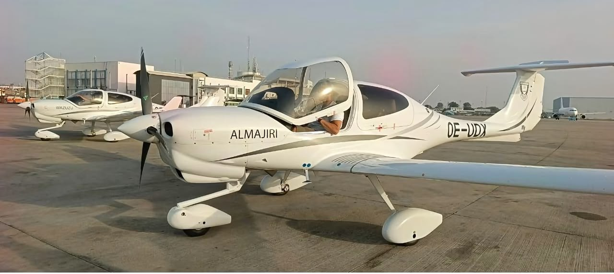

Baze University acquires two aircraft as founder expands aviation education

Baze University in Abuja has acquired two training aircraft from Austria as it expands into aviation education. The aircraft arrived at Nnamdi Azikiwe International Airport on Friday and received a water cannon salute. Founding Pro-Chancellor Datti Baba-Ahmed said the purchase would strengthen aviation training capacity and help develop skilled professionals.
The aircraft are intended for Baze Aviation School, which is being developed in Bwari in the Federal Capital Territory. School coordinator Aliyu Bello said they would allow students to gain hands-on experience alongside ground-school instruction. Proposed facilities include a runway, hangar, terminal building, laboratories and simulation centres.
The National Universities Commission has approved two undergraduate programmes at the university for the 2026/2027 academic session: Aviation Management and Aerospace Engineering. Baba-Ahmed has also outlined plans to train at least 600 professionals in fields including air traffic control, air rescue and firefighting, subject to approval from relevant regulators. A planned aerodrome hub would have a runway measuring 1,800 metres by 30 metres, with an additional 15 metres.
Vice-Chancellor Abiodun Adeniyi described the acquisition as part of a wider entrepreneurial vision, saying investments in education, healthcare and aviation could build local capacity, create jobs and address national needs. He has said the university aims to become the first private university in Africa to operate its own aviation school. The university’s aviation plans add to its earlier investments in higher education and healthcare; aviation training also requires substantial funding for aircraft, infrastructure, maintenance, safety systems and regulatory compliance.
Source: Premium Times